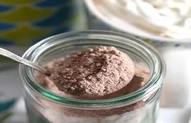

The story of Ceylon tea can be traced back over 200 years ago, when the country was a British colony. Ceylon tea as a beverage has been enjoyed by people all over the world for generations. It still has the value and interest as a beverage with many health benefits. Over a significant period of time, Sri Lankan tea industry has made progress in expanding the value added tea products
Carbonated Tea
Carbonated Tea also called as Fizzy Tea is unique chilled tea formulation made using concentrated liquid tea extract. Product is quite unique compared to other carbonated beverages due to very low additive levels. Unique tea flavor and color, sparking effect due to chilled carbonation are characteristics that increase the acceptability of this product.
- Place can buy :
click here
Instant Milk Tea
Instant milk tea is quite unique in terms of flavor. Membrane concentration technique has been used to reduce the thermal degradation of tea constituents by incorporating milk at the stage of concentration of tea extract and thereby to improve the quality of instant milk tea mixture.
- Places can buy :
click here
Tea Baby Soap
Tea baby soap is enriched with Tea catechins. Tea catechins are powerful antioxidants which contribute to the health benefits of tea. Black tea aroma, methyl salicylate which is used as an antiseptic agent is added to enhance the fragrance.
- Place can buy :
click here
Tea Protein

Refuse tea is a waste produced during the manufacturer of tea. In Sri Lanka about 4-6% of the total product of made tea is Refuse tea. Refuse tea or spent tea contains 20-30% of crude protein. Conventional protein isolation procedures are lengthy and somewhat expansive. Therefore, the membrane filtration technique was developed in the preparation of protein concentrate from refuse tea and spent tea. This includes high levels of proteins (24%) which consisted of all the essential amino acids, low level of polyphenols (7%), caffeine (0.9%), cruse fiber (0.4%) as well as 12% of total ash. Tea protein is an economical animal feed and a perfect replacement for BHT (Butylated Hydroxytoluene), which is used as commercial antioxidant in meat food products.
Tea Sauce
Spicy tea sauce is a healthier natural sauce prepared using fresh tea leaves extract as base material along with spices and other ingredients. Natural and unique ingredient formulation is the characteristic of this product to bring out the inherent benefits of the natural fresh tea leaves do contain. Tea sauce proposes a healthy and nutritious alternative to the conventional use of the tea as a beverage.
- How to make tea sauce at home :
click here
Tea Wine
Tea wine which contains 12.0% (v/v) alcohol is made from tea infusions. It is unique in taste aroma and stable in storage. Aged, formulated liquor in wooden vats raises the soothing effect of the beverage.
- How to make tea wine at home :
click here